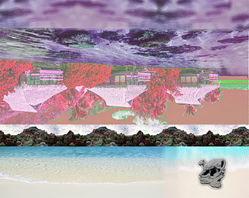
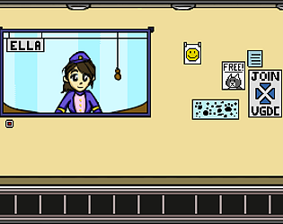

エステティック56709
Made during the Video Game Development Club fall 2017 game jam.
I was one of two programmers who developed エステティック56709 over one weekend using the Godot game engine.
Far Out

Made during the 2018 Global Game Jam
I was one of two progammers who developed Far Out over one weekend using the Godot game engine.
EDM Dance Party

Made as the Video Game Development Club project for spring 2018.
I was the lead programmer for EDM Dance Party, which was developed over one semester using the Godot game engine.
The Rise and Fall of Ella V
Made as the Video Game Development Club project for fall 2017.
I was the co-lead programmer for Ella V, which was developed over one semester using the Godot game engine.
BAMboo!

Made as the Video Game Development Club project for fall 2016.
I was a gameplay progammer for BAMboo!, which was developed over one semester using the Godot game engine.
Age of Attrition

Made as the Video Game Development Club project for spring 2017.
I was the lead programmer for Age of Attrition, which was developed over one semester using the Unity game engine.